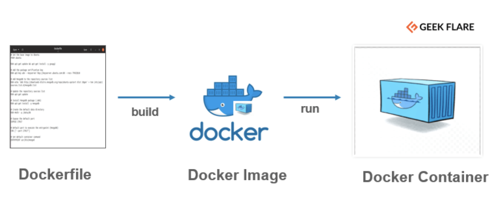

docker镜像定制 Dockfile

实际上 docker 镜像是可以被定制的，我们从 docker 底层了解到，每个镜像都是以一个 base 镜像为基础，进行定制。
从第一节课我们知道，镜像是一层一层进行构建而出，而定制的过程也正是不断的一层一层的增加，添加配置、文件等信息。
视频讲解
镜像定制的方式
镜像定制的方式有两种
- 运行docker镜像，在容器中进行文件的增加和命令的修改，然后使用
docker commit提交当前镜像完成定制 - 使用
Dockerfile的文本文件来进行镜像定制，我们可以把镜像的每一层修改、安装、构建、操作的命令都写入到这个文件中，一行就对应镜像的一层
docker commit 的方式没有办法记录详细的定制进程，所以不够直观，而 Dockerfile 的方式更方便更直观，还可以提交到版本库进行管理
docker commit
docker commit 能不用就不用，但是有时候工作忙是常事，暂时使用这种方式可以节省很多时间。
docker commit [选项] <容器ID或容器名> [<仓库名>[:<标签>]]
运行nginx
$ docker run -d -p 80:80 nginx:stable-alpine
59e066b0a3af3dacf0e8af84d8ce351d512e270739a6e5c6ae7cc839cbbd9ef4
修改容器内部
$ docker exec -it 59e066b0a3af3dacf0e8af84d8ce351d512e270739a6e5c6ae7cc839cbbd9ef4 sh
/ # echo hello minibear2333 > /usr/share/nginx/html/index.html
/ # exit
$ docker diff 59e066b0a3af3dacf0e8af84d8ce351d512e270739a6e5c6ae7cc839cbbd9ef4
C /var
C /var/cache
C /var/cache/nginx
A /var/cache/nginx/scgi_temp
A /var/cache/nginx/uwsgi_temp
A /var/cache/nginx/client_temp
A /var/cache/nginx/fastcgi_temp
A /var/cache/nginx/proxy_temp
C /etc
C /etc/nginx
C /etc/nginx/conf.d
C /etc/nginx/conf.d/default.conf
C /root
A /root/.ash_history
C /usr
C /usr/share
C /usr/share/nginx
C /usr/share/nginx/html
C /usr/share/nginx/html/index.html
C /run
A /run/nginx.pid
提交容器
docker commit -a "minibear2333" -m "change index.html" 59e066b0a3af3dacf0e8af84d8ce351d512e270739a6e5c6ae7cc839cbbd9ef4 minibear2333/nginx:commit-stable-alpine
-a的全称是--author，当前提交的作者名-m的全称是--message，修改信息，类似于git commit -m "xxx"
测试
docker images
Dockerfile
格式说明
虽然 Dockerfile 并不区分大小写，但还是约定指令使用大写。
Dockerfile 的第一条可执行指令必须是 FROM 。
以#开头的是注释，行内的#都被当做参数，并且不支持续行。
FROM
构建的镜像继承自某个base image。格式:
FROM <image>
FROM <image>:<tag>
FROM <image>@<digest>
FROM指令必须是 Dockerfile 的第一个指令，可以使用多次来构建多个镜像，以最后一个镜像的 ID 为输出值。
tag 和 digest 是可选的，如果不提供则使用 latest 。
RUN
在镜像的构建过程中执行特定的命令，并生成一个中间镜像。格式:
RUN <command>：shell格式
RUN ["executable", "param1", "param2"]：`exec`格式
CMD
指定容器运行时的默认参数，如果出现多次以最后一次为准。格式：
CMD ["executable", "param1", "param2"]：exec格式CMD command param1 param2：shell格式CMD ["param1", "param2"]：省略可执行文件的exec格式，这种写法使CMD中的参数当做ENTRYPOINT的默认参数，此时ENTRYPOINT也应该是exec格式
具体与 ENTRYPOINT 的组合使用， 使用 exec 的格式 CMD 放在 ENTRYPOINT 后面，可以当作 ENTRYPOINT 的参数，同时 CMD 可以在执行的时候被覆盖。
注意与 RUN 指令的区别： RUN 在构建的时候执行，并生成一个新的镜像， CMD 在容器运行的时候执行，在构建时不进行任何操作。
LABEL
给构建的镜像打标签。格式：
LABEL <key>=<value> <key>=<value> <key>=<value> ...
如果 base image 中也有标签，则继承，如果是同名标签，则覆盖。
为了减少图层数量，尽量将标签写在一个 LABEL 指令中去，如：
LABEL multi.label1="value1" \
multi.label2="value2" \
other="value3"
MAINTAINER(已被弃用)
为构建的镜像设置作者信息。格式：
MAINTAINER <name>
LABEL 比 MAINTAINER 更灵活，推荐使用 LABEL ，弃用 MAINTAINER 。
EXPOSE
为构建的镜像设置监听端口，使容器在运行时监听。格式：
EXPOSE <port> [<port>...]
EXPOSE 指令并不会让容器监听 host 的端口，如果需要，需要在 docker run 时使用 -p 、 -P 参数来发布容器端口到 host 的某个端口上。
ENV
在构建的镜像中设置环境变量，在后续的 Dockerfile 指令中可以直接使用，也可以固化在镜像里，在容器运行时仍然有效。格式：
ENV <key> <value>：把第一个空格之后的所有值都当做<key>的值，无法在一行内设定多个环境变量。
ENV <key>=<value> ...：可以设置多个环境变量，如果<value>中存在空格，需要转义或用引号"括起来。
docker 推荐使用第二种，因为可以在一行中写多个环境变量，减少图层。如下：
ENV myName="John Doe" \
myDog=Rex\ The\ Dog \
myCat=fluffy
注意
可以在容器运行时指定环境变量，替换镜像中的已有变量， docker run --env <key>=<value> 。
使用ENV可能会对后续的 Dockerfile 指令造成影响，如果只需要对一条指令设置环境变量，可以使用这种方式： RUN <key>=<value> <command>
ARG
有两种用法，用法一和 ENV 完全一样，但是构建参数在定义的时候生效而不是在使用的时候，在启动容器的时候就无效了。
第二种
指定了用户在 docker build --build-arg <varname>=<value> 时可以使用的参数。格式：
ARG <name>[=<default value>]
如下面第三行开始的 user 才是用户构建参数传递过来的 user ：
FROM busybox
USER ${user:-some_user}
ARG user
USER $user
后续的ENV指令会覆盖同名的构建参数，正常用法如下：
FROM ubuntu
ARG CONT_IMG_VER
ENV CONT_IMG_VER ${CONT_IMG_VER:-v1.0.0}
RUN echo $CONT_IMG_VER
docker 内置了一批构建参数，可以不用在 Dockerfile 中声明：HTTP_PROXY、http_proxy、HTTPS_PROXY、https_proxy、FTP_PROXY、ftp_proxy、NO_PROXY、no_proxy
注意: 在使用构建参数(而不是在构建参数定义的时候)的指令中，如果构建参数的值发生了变化，会导致该指令发生变化，会重新寻找缓存。
ADD
在构建镜像时，复制上下文中的文件到镜像内，格式：
ADD <src>... <dest>
ADD ["<src>",... "<dest>"]
<src> 可以是文件、目录，也可以是文件URL。可以使用模糊匹配(wildcards，类似shell的匹配)，可以指定多个 <src> ，必须是在上下文目录和子目录中，无法添加 ../a.txt 这样的文件。如果 <src> 是个目录，则复制的是目录下的所有内容，但不包括该目录。如果 <src> 是个可被docker识别的压缩包，docker会以tar -x的方式解压后将内容复制到 <desct> 。
<dest> 可以是绝对路径，也可以是相对WORKDIR目录的相对路径。
所有文件的 UID 和 GID 都是 0 。
注意: 如果 docker 发现文件内容被改变，则接下来的指令都不会再使用缓存。
关于复制文件时需要处理的 / ，基本跟正常的 copy 一致。
COPY
与 ADD 类似，只不过 ADD 是将上下文内的文件复制到镜像内， COPY 是在镜像内的复制。格式与 ADD 一致。
注意
如果 <dest> 不存在， COPY 指令会自动创建所有目录，包括子目录
ENTRYPOINT
指定镜像的执行程序，只有最后一条 ENTRYPOINT 指令有效。格式：
ENTRYPOINT <command> <param1> <param2>：shell格式，因为嵌套在shell中，PID不再为1，也接受不到Unix信号，即在docker stop <container>时收不到SIGTERM信号，需要手动写脚本使用exec或gosu命令处理。ENTRYPOINT ["<executable>", "<param1>", "<param2>"]：exec格式，PID为 1
CMD 和 ENTRYPOINT 至少得使用一个。 ENTRYPOINT 应该被当做 docker 的可执行程序， CMD 应该被当做 ENTRYPOINT 的默认参数。
docker run <image> <arg1> <arg2> ... 会把之后的参数传递给 ENTRYPOINT ，覆盖 CMD 指定的参数。可以用 docker run --entrypoint 来重置默认的 ENTRYPOINT 。
VOLUME
指定镜像内的目录为数据卷。格式：
VOLUME ["/var/log"]
VOLUME /var/log /var/db
在容器运行的时候， docker 会把镜像中的数据卷的内容复制到容器的数据卷中去。
如果在接下来的 Dockerfile 指令中，修改了数据卷中的内容，则修改无效。
USER
为接下来的Dockerfile指令指定用户。格式：
USER daemon
收影响的指令有： RUN 、 CMD 、 ENTRYPOINT 。
WORKDIR
为接下来的 Dockerfile 指令指定当前工作目录，可多次使用，如果使用的是相对路径，则相对的是上一个工作目录，类似 shell 中的 cd 命令。格式：
WORKDIR /path/to/workdir
收影响的指令有： RUN 、 CMD 、 ENTRYPOINT 、 COPY 和 ADD 。
ONBUILD
向镜像中添加一个触发器，当以该镜像为 base image 再次构建新的镜像时，会触发执行其中的指令。格式：
ONBUILD [INSTRUCTION]
比如我们生成的镜像是用来部署 Python 代码的，但是因为有多个项目可能会复用该镜像。所以一个合适的方式是：
[...]
# 在下一次以此镜像为base image的构建中，执行ADD . /app/src，将项目代目添加到新镜像中去
ONBUILD ADD . /app/src
# 并且build Python代码
ONBUILD RUN /usr/local/bin/python-build --dir /app/src
[...]
注意
ONBUILD 只会继承给子节点的镜像，不会再继承给孙子节点。
ONBUILD ONBUILD 或者 ONBUILD FROM 或者 ONBUILD MAINTAINER 是不允许的。
STOPSIGNAL
触发系统信号。格式：
STOPSIGNAL signal
HEALTHCHECK
增加自定义的心跳检测功能，多次使用只有最后一次有效。格式：
HEALTHCHECK [OPTION] CMD <command>：通过在容器内运行command来检查心跳HEALTHCHECK NONE：取消从base image继承来的心跳检测
可选的OPTION：
--interval=DURATION：检测间隔，默认30秒--timeout=DURATION：命令超时时间，默认30秒--retries=N：连续N次失败后标记为不健康，默认3次
<command> 可以是shell脚本，也可以是exec格式的json数组。
docker以 <command> 的退出状态码来区分容器是否健康，这一点同shell一致：
- 0：命令返回成功，容器健康
- 1：命令返回失败，容器不健康
- 2：保留状态码，不要使用
举例：每5分钟检测本地网页是否可访问，超时设为3秒：
HEALTHCHECK --interval=5m --timeout=3s \
CMD curl -f http://localhost/ || exit 1
可以使用docker inspect命令来查看健康状态。
注意 docker版本1.12
SHELL
更改后续的Dockerfile指令中所使用的shell。默认的shell是 ["bin/sh", "-c"] 。可多次使用，每次都只改变后续指令。格式：
SHELL ["executable", "parameters"]
上下文
实际上不是直接把 Dockerfile 所在目录做为当前目录，实际上是把构建目录作为容器上下文目录，也可以让 Dockerfile 放在不同位置，使用 -f 参数来指定
.dockerignore
在 docker 构建镜像的第一步， docker CLI 会先在上下文目录中寻找. dockerignore 文件，根据 .dockerignore 文件排除上下文目录中的部分文件和目录，, 然后把剩下的文件和目录传递给docker 服务。
.dockerignore 语法同 .gitignore
镜像导出导入
docker save xxx -o test.tar
docker load -i test.tar
压缩导出
docker save xxx | gzip > test.tar.gz
引用
https://github.com/qianlei90/Blog/issues/35
公众号
如果你想订阅我的文章，可以微信扫码关注我的公众号【机智的程序员小熊】，我是一个爱思考的程序员，专注于开发、运维、云技术、计算、网络、云存储、数据库、linux等编程知识